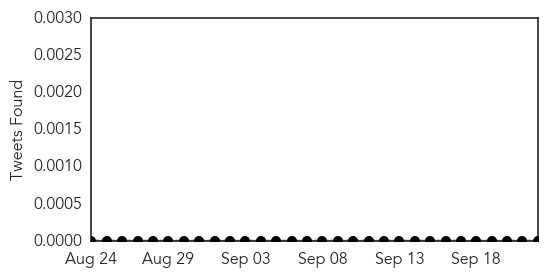
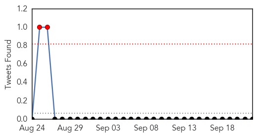
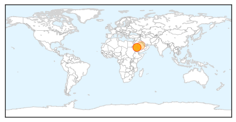
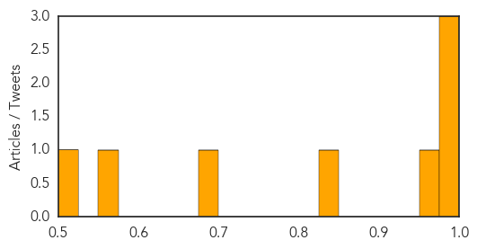

Hemmorhagic Fever
30-Day Web Trend
3 alerts, 0 warnings
30-Day Twitter Trend
0 alerts, 0 warnings

Article Locations
Article Confidences

Top Articles:
Top Tweets:
-
No tweets found for Sep 22, 2015
MERS
30-Day Web Trend
0 alerts, 0 warnings
30-Day Twitter Trend
1 alerts, 0 warnings

Article Locations
Article Confidences
Top Articles:
- 0.998
- Saudi Arabia, Jordan report more MERS as Hajj begins
- 0.994
- Respiratory illness prevalent in Middle East where some residents may travel soon
- 0.992
- WHO and the Government of Saudi Arabia work together to care for health issues of hajj pilgrims
- 0.975
- Saudi Arabia ready to deal with MERS cases ahead of hajj
- 0.842
- Eid al-Adha 2015: Millions make Hajj pilgrimage to Mecca amid heightened terrorism alert
- 0.680
- Treatment of MERS patients to continue after Haj
- 0.575
- Hajj rituals begin: Millions of pilgrims moving from Makkah to Mina
- 0.516
- Muslim pilgrims throng Mina as hajj starts
Top Tweets:
- 0.666
- AFD Blog `Saudi MOH Reports No New MERS Cases' MERS-CoV http://t.co/IODLrbmmor